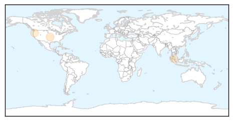
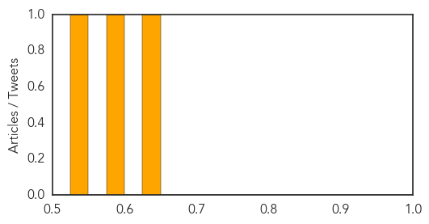
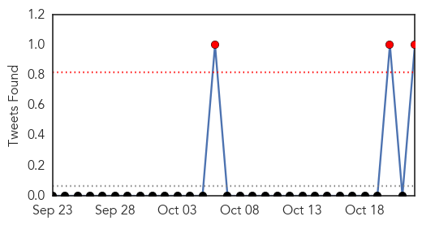

Hepatitis
30-Day Web Trend
4 alerts, 6 warnings

30-Day Twitter Trend
0 alerts, 0 warnings

Article Locations
Article Confidences
Top Articles:
Top Tweets:
-
No tweets found for Oct 22, 2015
MERS
30-Day Web Trend
0 alerts, 0 warnings
30-Day Twitter Trend
3 alerts, 0 warnings

Article Locations

Article Confidences

Top Articles:
-
No articles found for Oct 22, 2015
Top Tweets:
- 0.786
- New Study: Association of Higher MERS-CoV Virus Load with Severe Disease and Death, Saudi Arabia, 2014 https://t.co/e2TtTe3LqM
- 0.660
- AFD Blog `Riyadh & Hofuf Add MERS Cases' MERS-CoV https://t.co/vWLeEcyGwg
- 0.592
- AFD Blog `@WHO Update On Riyadh Household MERS Cluster' MERS-CoV https://t.co/DQwGAy4kZK
- 0.563
- MERS-CoV Causes Multiple Organ Damage and Lethal Disease in Mice Transgenic for Human Dipeptidyl Peptidase 4. https://t.co/6Ut4vaZoh2
- 0.540
- Avian Flu Diary: ECDC Rapid Risk Assessment On MERS-CoV & The Jordanian Cluster https://t.co/fwzdgC2eTW https://t.co/lebjhXdggZ